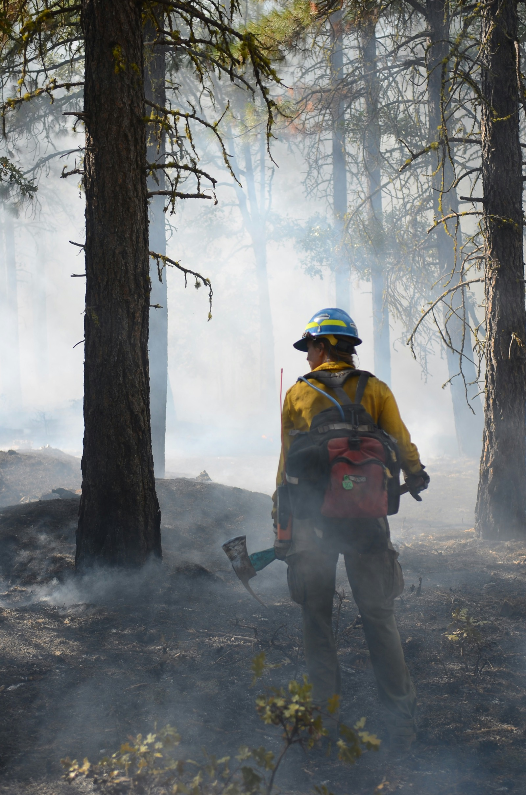
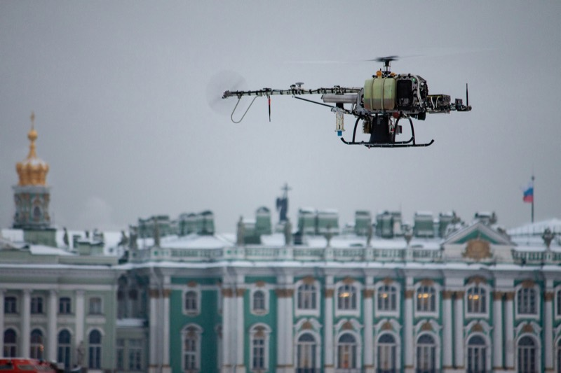
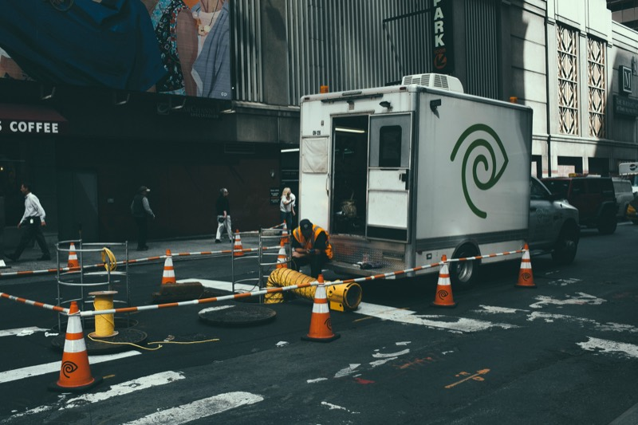
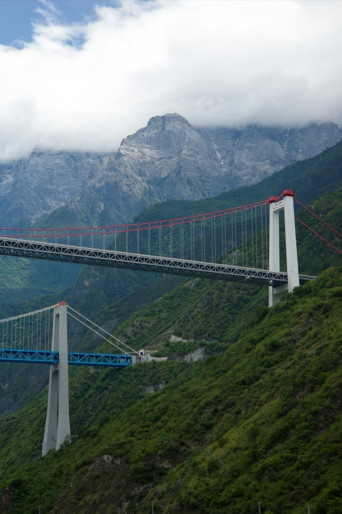
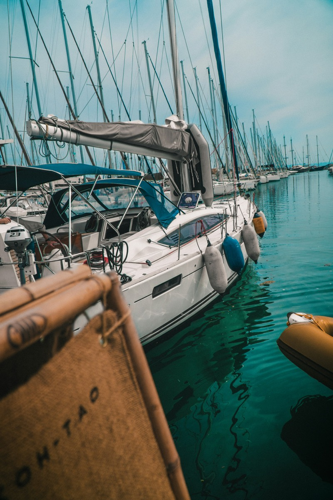
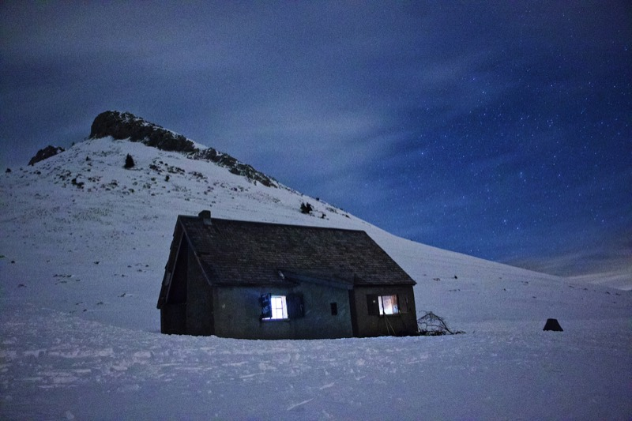

MT-75K
重载耐用。
年复一年。
无论是偏远高寒的驿站，还是两万人的演出现场，75 kW 的机组只需两个人抬进抬出。不像别的产品，大而笨重，需要额外的卡车和油耗。

01
对比同级产品
对比同等额定输出的拖车式柴油或燃气发电机组。
| 指标 | 同级拖车式柴油/燃气机组 | MT-75K |
|---|---|---|
| 重量 | 700–900 kg | 40–50 kg |
| 功率密度 | ~83–107 W/kg | 最高 1,875 W/kg |
| 外形尺寸 | 长 200–250 cm，拖车式 | 65 × 40 × 40 cm |
| 部署方式 | 拖运或吊装就位 | 人力搬运，或作为载荷空运 |
| 燃料 | 每台仅柴油或天然气其一 | 8 种燃料，含氢气与甲醇 |
| 使用寿命 | 轻量化混动机组寿命降至约 300 小时 | 3,000 小时以上 |
| 冷启动 | −40 °C 无法启动 | −40 °C，秒级启动 |
| 4,000 m 输出 | 约为额定功率的一半 | 额定功率的 75% 以上 |
| 电力输出 | 仅交流 | 交流 + 直流 |
02
应用场景

eVTOL 与空中出租
混动增程，且不必承担电池更换周期。

重型工业无人机
同一机体上兼得续航与载荷。

偏远工地
无需拖车与吊车即可到位的现场电力。

商用船舶
甲板空间受限时的辅助与备用电源。

通信基站
步行或空运抵达的无人值守站点。
活动与影视
外景供电，无需发电车。